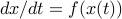
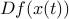
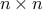
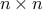

A polynomial-time algorithm for determining quadratic Lyapunov functions for nonlinear systems
L. Vandenberghe and S. Boyd
Proceedings of the European Conference on Circuit Theory and Design, pages 1065–1068, 1993.
We consider nonlinear systems  where  is known to
lie in the convex hull of   matrices .
For such systems, quadratic Lyapunov functions can be determined using
convex programming techniques. This paper describes an algorithm that either
finds a quadratic Lyapunov function or terminates with a proof that no
quadratic Lyapunov function exists. The algorithm is an interior-point method
based on the theory developed by Nesterov and Nemirovsky.
 matrices .
For such systems, quadratic Lyapunov functions can be determined using
convex programming techniques. This paper describes an algorithm that either
finds a quadratic Lyapunov function or terminates with a proof that no
quadratic Lyapunov function exists. The algorithm is an interior-point method
based on the theory developed by Nesterov and Nemirovsky.